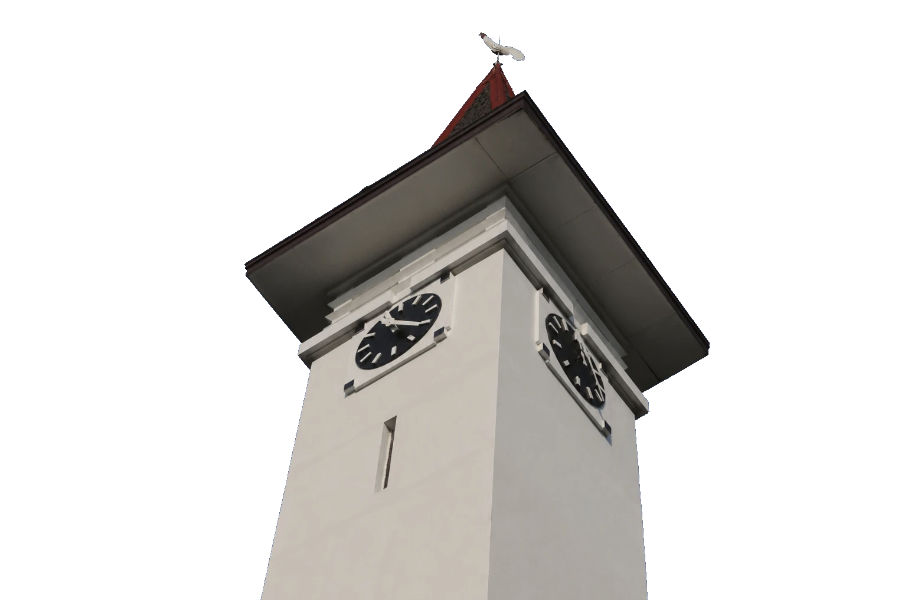
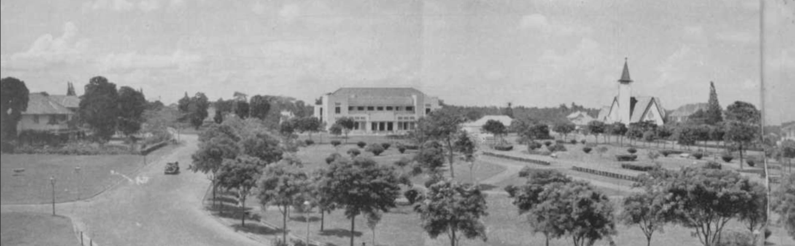
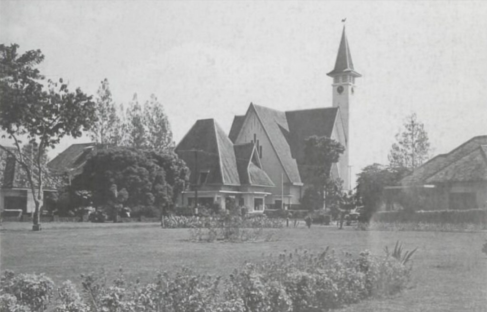
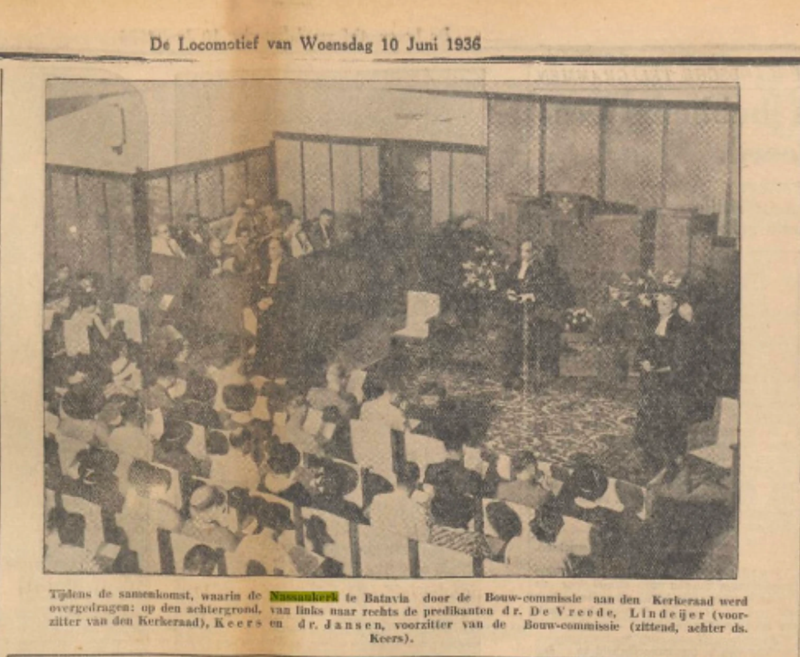
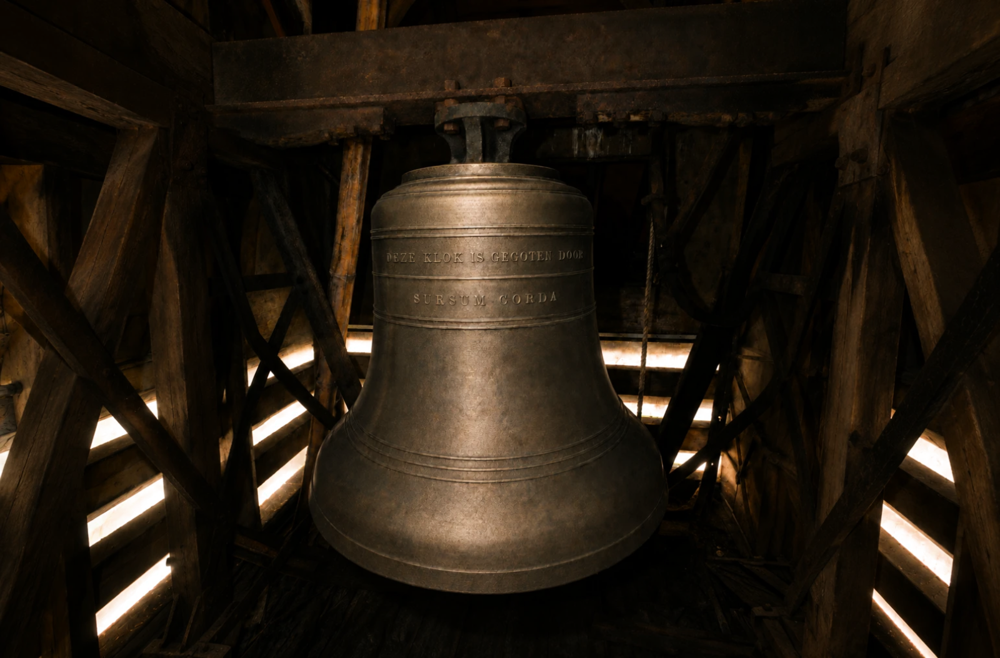
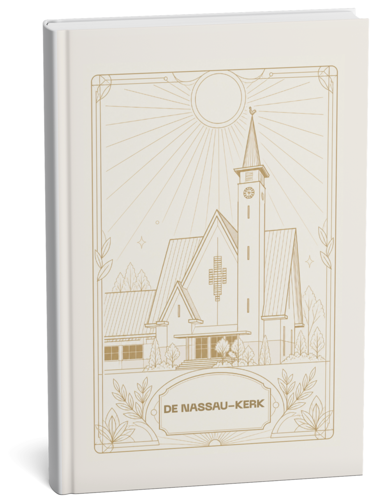

Warisan yang dirawat, sejarah yang diabadikan.
Buku peringatan 90 tahun GPIB Paulus, dahulu bernama De Nassau-Kerk, hadir sebagai jejak sejarah dan iman yang terus bertumbuh.




Nama yang kembali disebut
De Nassau-Kerk adalah nama asli gedung Gereja GPIB Paulus saat pertama kali berdiri pada tahun 1936. Nama ini diambil dari gelar kehormatan Pangeran Maurits van Nassau, tokoh penting dalam sejarah Belanda.
Setelah Indonesia merdeka, nama tersebut resmi diubah menjadi Gereja Paulus pada 31 Oktober 1948, bertepatan dengan peresmian GPIB.
Buku ini menghidupkan kembali nama De Nassau-Kerk sebagai penghormatan pada akar sejarah, sekaligus merayakan 90 tahun perjalanan iman yang telah bertumbuh menjadi GPIB Paulus yang kita kenal hari ini.

Sursum Corda
“Angkatlah hatimu.” Begitu bunyi inskripsi pada lonceng yang masih tergantung di menara, mengiringi ibadah jemaat GPIB Paulus selama puluhan tahun.
Lima kisah yang jarang diketahui
Di balik kemegahan 90 tahun GPIB Paulus, tersimpan cerita yang tak banyak orang tahu.
-
I
Dibangun murni oleh jemaat
Gedung ini mulai dibangun saat Hindia Belanda dihantam krisis ekonomi global pada awal 1930-an. Pembangunannya terwujud murni dari dana patungan jemaat sendiri, tanpa subsidi pemerintah.
-
II
Pernah "menyamar" jadi gedung cokelat
Bangunan putih yang kita kenal sekarang pernah berganti warna. Pada masa pendudukan Jepang, tembok luar gereja sengaja dicat cokelat sebagai kamuflase dari pesawat pengebom Sekutu.
-
III
Organ pipa yang tak pernah berbunyi
Pada 1950-an, gereja mendatangkan organ pipa dari Sukabumi, namun tak ada ahli yang bisa memainkannya. Selama bertahun-tahun, ibadah diiringi harmonium yang suaranya sering dikira berasal dari organ pipa raksasa itu.
-
IV
Misteri cawan perak yang hilang
Gereja Paulus pernah menyimpan cawan perjamuan perak peninggalan Gubernur Jenderal Johannes Camphuys, yang wafat pada 1695. Artefak tak ternilai ini dicuri pada 2013 dan jejaknya belum ditemukan.
-
V
Titik nol lahirnya GPIB
Gedung ini bukan sekadar tempat ibadah, melainkan saksi lahirnya Gereja Protestan di Indonesia bagian Barat. Nama Nassaukerk resmi diubah menjadi Gereja Paulus pada 31 Oktober 1948, bertepatan dengan peresmian GPIB.
Edisi kolektor terbatas
Sampul kain krem berlapis emas, dijilid teknik Swiss, 250 eksemplar.

Eksemplar tercetak, tidak akan dicetak ulang.
Hardcover
Sampul kain dengan cetak emas, dijilid dengan teknik Swiss.
Kertas khusus
Fancy paper dengan teknik cetak khusus.
Pre-order buku
Dana dari penjualan buku akan menunjang program pelayanan GPIB Paulus Jakarta.
Transfer
Transfer ke rekening BCA di samping sesuai kode unik.
Kirim bukti
Kirim bukti transfer melalui WhatsApp ke nomor contact person.
Terima buku
Buku dikirim atau diambil sesuai jadwal yang diinformasikan.
Rekening pembayaran
BCA 2066907888
a.n. GPIB Paulus
Tambahkan kode unik “90” pada 2 digit terakhir transfer. Contoh: Rp250,090.
Karya tim penyusun sejarah GPIB Paulus
- Ketua
- John Pattiwael
- Anggota
- Jonathan Wibowo, Marietje Wowor, Lendy Sumual, Joyce Rumokoy
- Editor
- Christopher